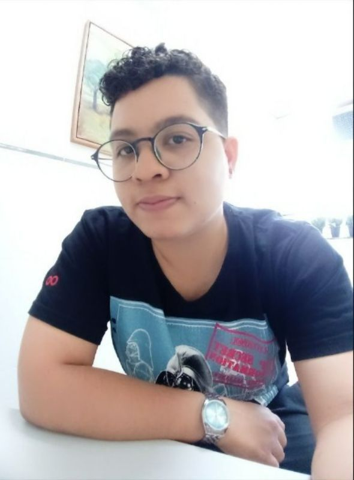

Lucas Alencar
Front-end Developer
Profile
Desenvolvedor Front-end em formação, tenho 24 anos, sou comunicativo,
tenho facilidade de trabalhar em grupo, estou em busca de adquirir mais
conhecimentos como programdor e me tornar um desenvolvedor Full-stack.
Employment History
Tribunal Regional Eleitoral, setor administrativo, Recife
Câmara de conciliação, auxiliar de processo de conciliação, Recife
Education
Cusro de Front-end, StartLatam, Recife
SCRUM Foundation Professional Certification - SFPC
Curso de web design, Origamid
Full-stack, Instituto de Gestão e tecnologia da informação- IGTI
Curso de inglês, Transworld
Bacharelado em direito, Universidade Salgado de Oliveira
Skills
Comunicativo
Boa habilidade de desenvolver projetos em grupo
Organizado
Contacts
Recife/Olinda - PE
lucalencar.dev@gmail.com
(81) 9 9799-0128
Programming knowledge
Html
Css + Sass
JavaScript
Git/Controle de versão